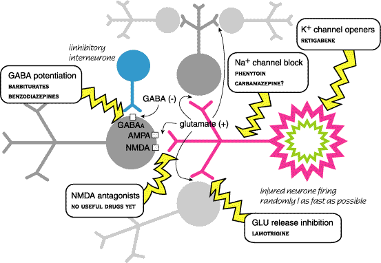

Phenobarbitone is the drug of choice for dogs and probably also cats. It is the cheapest and most effective. It usually produces sedation and ataxia for the first few days then tolerance develops to these effects. It takes 2 weeks to equilibrate. This is one of the most potent drugs for inducing P450 enzymes - metabolism of phenobarbitone and other drugs is greatly increased. Very rarely, it can cause liver damage.
Felbamate is a relatively new drug which looks promising in dogs but is still expensive. It has a relatively short half life of 5 - 6 hours. Not available here.
Primidone has been used in dogs for many years. It is metabolised to phenobarbitone which is probably responsible for at least 85% of primidone’s effect. Cats don't metabolise it as well so it is less effective. Liver damage occurs after high doses - 70% of clinical cases? Use phenobarbitone instead.
Phenytoin and carbamazepine are effective in man but their half lives are too short in dogs. Phenytoin is teratogenic and can cause liver damage, although a newer analogue, fosphenytoin, may be better. Their main mechanism is sodium channel blockade - use dependent block stops high frequency firing. They induce liver enzymes in about a week - faster metabolism.
Sodium valproate has a very short half life in the dog but may work in cats - no enzyme induction. It stops GABA breakdown / reuptake.
The benzodiazepines (diazepam) are not much use in dogs as they become tolerant in a few hours - days but may be useful in cats. There are many other benzodiazepine type drugs used in man - most do not work reliably in dogs and cats or are so short acting that they are useless.
Bromide passes through GABA receptors more easily than chloride and hyperpolarises cells in the same way. It is cheap and is unlikely to kill the dog, but has little else to recommend it. It is effective in about the same proportion of cases as phenobarbitone (~ 70%) but sometimes works when phenobarbitone does not (and vice versa). It has not been used for 30 years in people because of unpleasant subjective side effects but is being revived as a treatment for dogs in the USA. It is ethically dubious to make an animal’s remaining life a misery with drugs in order to avoid being sued for killing the animal. It should be avoided in cats as it is less effective than in dogs and makes approximately 50% of them cough, which can lead to irreversible lung damage and death.
Gabapentin and lamotrigine are newish drugs which work well in people, but are also metabolised too quickly in dogs to be of much use. Topiramate is sometimes used in people. It is supposed to be synergistic with phenobarbitone but there is no experience of its use in dogs.
Combinations of older drugs are a last resort - in people these combinations are no better than an adequate dose of one drug. In veterinary practice, combinations of phenobarbitone and bromide (at low doses) are sometimes used. Combinations of phenobarbitone and more modern drugs may be useful, but there is very little information on this as yet. Remember that most anticonvulsant drugs will potentiate anaesthetics, but enzyme innduction will shorten their effect. This can provide nasty surprises.
Avoid phenothiazines and butyrophenones - may lower seizure threshold and produce extra-pyramidal effects.
| drug | dog | cat | man |
| phenobarbitone | 42 - 100 (24 - 30) | 34 - 43 | 70 - 100 |
| primidone | 2 - 7 | 6 - 12 | |
| phenytoin | 2 - 4 | 24 - 108 | 15 - 24 |
| carbamazepine | 1 | 24 - 48 | |
| valproate | 1.5 - 3 | 8.5 | 8 - 15 |
| ethosuximide | 17 | 16 - 70 | |
| diazepam | 2 - 5 | 2 | 24 - 72 |
| clonazepam | 1 - 5 | 24 - 36 | |
| felbamate | 12 | 23 | |
| bromide | 25 - 46 days | 11 days |
Half lives of commonly used anticonvulsants in hours.

Mechanisms of action.
Response to drugs in man is similar to dogs - ie a large proportion of cases are not improved. This has led to the development of lots of new drugs which have not yet been evaluated in domestic animals, particularly NMDA antagonists. The drugs of choice for dogs could change radically in a few years.
Electrical stimulation of the cervical vagus works in many people with epilepsy which is refractory to drugs. This has not been reported in dogs yet! Stimulation of various parts of the brain, either electrical or magnetic, appears to work in some people and some models of epilepsy, as does chopping out bits of the brain (usually parts of the hippocampus).
More interestingly from a pharmacological point of view, a ketogenic diet has been shown to be effective at preventing epilepsy in children. If the mechanism of this was understood, new drugs might follow.
In the longer term, gene therapy to replace defective potassium channels is a possibility in people.